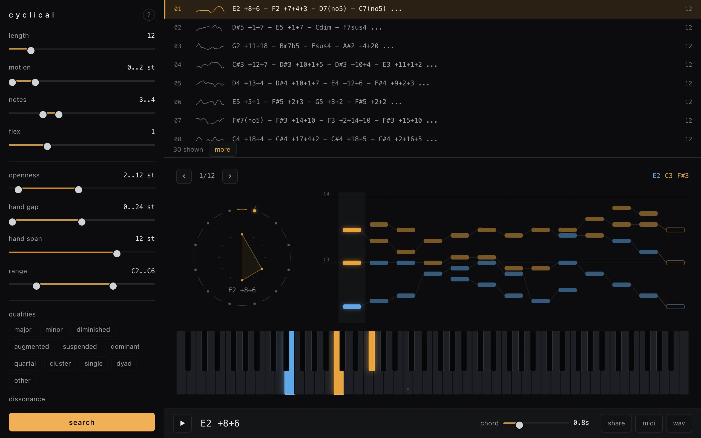

Cyclical searches for chord progressions that close their own loop. A chord is any set of up to ten piano notes two hands can hold: at most five per hand, a hand spanning at most an octave by default, adjacent notes within a hand between 2 and 12 semitones apart. A progression moves each voice in pitch order by at most two semitones a step, may add or drop one voice per step, and after twelve chords the last one has to move back to the first under the same rule. The defaults give three or four note chords between C2 and C6. The solver is Rust compiled to WebAssembly, running in a Web Worker, and it enumerates every cycle that fits.
Exhaustive is the easy part. A depth-first search from every valid start chord finds them all. The problem is what the first thirty results look like. A plain DFS drains one subtree before touching the next, so the first thirty cycles are near-identical siblings that differ in the last chord or two. I wanted the stream to look random without giving anything up.
Reordering without discarding
The search keeps 32 lanes alive at once, each a DFS rooted at a different start chord. After a lane emits a cycle it goes to the back of the queue. A lane that runs 2,048 nodes without emitting also goes to the back, so a barren subtree can't hog the stream. No work is dropped, only reordered, so the set of results is the same for every seed. A test runs the same small search under two seeds and asserts that the orders differ and the sets agree.
Start chords come from one lazy generator per bass note, and the search round-robins across them, so consecutive starts differ in register instead of exhausting every chord on C2 before touching C#2. The order of the bass notes is itself shuffled by the seed.
Successor order is shuffled too, but by a hash of the chord's notes mixed with the seed rather than by a shared random stream. Two paths that reach the same chord expand its successors in the same order, which keeps the search resumable. The worker calls into WASM with a node budget, yields to the event loop so a stop or a request for more can interleave, and picks up exactly where it stopped. The budget starts at 50,000 nodes and adapts toward 20 ms per call. A test slices the search into budgets of 17 nodes and checks the output matches one uninterrupted run.
Each cycle once
A cycle of twelve chords has twelve rotations and I only want one of them. The start chord has to be the smallest chord in the cycle, so any successor that compares below the start is pruned on the spot, since that cycle belongs to a different start's search. If the minimum appeared twice the tie would go to the lexicographically least rotation, but chords can't repeat within a cycle, so the minimum is unique and that clause never fires. Repeats were allowed at first, and long cycles came out padded with a chord holding still.
The other prune is reachability. With k steps left and a two-semitone move limit, a voice more than 2k semitones from where it started can never get home, so the branch dies. With fixed chord sizes every voice is tracked and this is exact. With flexible sizes it becomes asymmetric. The lowest note can jump up freely by dropping the bass voice, but it can only sink two semitones a step, and the highest note mirrors that. Only the bounded direction is safe to prune.
The test that matters is the brute-force diff. On a tiny parameter set, one or two notes between MIDI 60 and 65 in cycles of length 4, the test enumerates every valid chord, builds every cycle by naive recursion, canonicalizes them, and diffs that set against what the solver emits. A missing or extra cycle fails the test and prints the first example of each. The solver crate has 22 tests and this is the one that would catch a bad prune.
Labels and a dissonance table
Each chord gets a label so the results list reads as music. Eighteen pitch-class templates are tried with the bass note as root first, so A C E G reads as Am7 and C E G A reads as C6. Stacked fourths are checked before the templates, since C F Bb is pitch-class equivalent to Fsus4 and the voicing should decide. Anything else gets the lowest note and its interval stack, like E2 +8+6, so every chord has a short deterministic name.
The dissonance filter is hand-tuned, not taken from the psychoacoustics literature. Every pair of voiced notes gets a weight by interval class: 700 for a semitone, 300 for a whole tone, 240 for a tritone, 40 for a third, 25 for a fourth or fifth. Pairs one or two semitones apart get half again, and pairs more than an octave apart lose a third of their weight unless the interval class is a semitone or whole tone, so a minor ninth stays harsh. The average over all pairs falls into four tiers with cuts at 70, 180 and 500. I set those numbers by hand to hit anchors I wanted: triads consonant, sevenths and sus chords mellow, whole-tone rubs and exposed tritones tense, semitone clusters harsh. A test pins the anchors. It sorts chords in an order I agree with, and that is all it claims.
Share links encode the progression rather than the search: a version byte, the playback tempo in tenths of a second, then per chord one header byte with the hand split and note count followed by the raw MIDI notes. Opening one hands the notes back to the same Rust code for labels and splits and skips the search entirely.